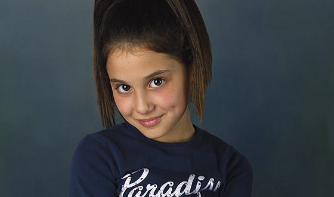
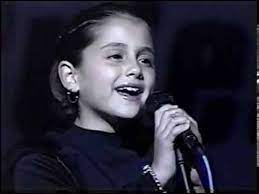

юность
Ариана Гранде-Бутера появилась на свет в небольшом городке на восточном побережье Флориды "Бока Ратон" 26 июня 1993 года. Родители Джоан Гранде и Эдвард Бутера с ранних лет прививали детям любовь к искусству. У Арианы есть старший брат Фрэнки, который стал успешным актером и продюсером, сейчас он агент младшей сестры. Ариане не было и четырех лет, когда родители отдали девочку в музыкальный театр «Little Palm Theatre», а уже через 4 года она дебютировала на телевидении, исполняя гимн США. В 13 лет девушка всерьез задумалась о музыкальной карьере и начала подтягивать вокал у известного голливудского преподавателя Эрика Ветро, у которого ставили голос многие американские звезды, такие как Кэти Перри. После ее карьерой занялся старший брат.
 